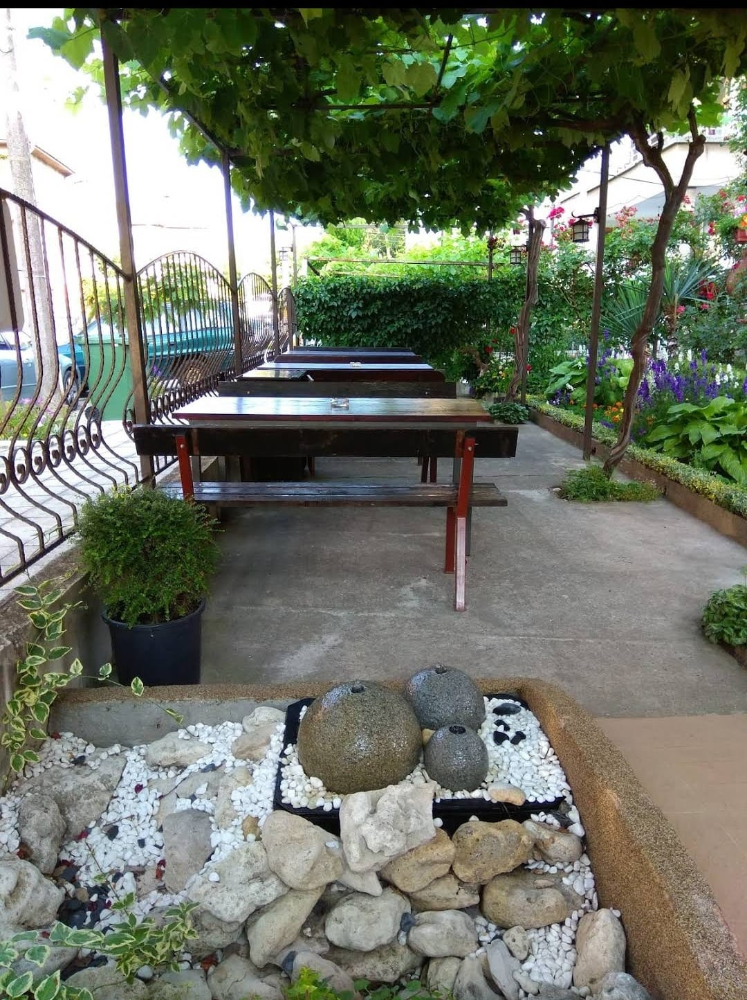

Нашите услуги
Къща за гости Света Марина се намира на 100 метра от Северния плаж на Приморско. В близост са центъра на града, както и южния плаж. Предлагаме спокойствие, уют и красива градина с маси за хранене.
Безплатен Wi-Fi наличен в хотелските стаи и двора на къщата.
Климатик във всяка стая.
Всяка стая разполага с тераса.
Красива градина в двора на къщата.
Маси за хранене в двора.
Сейф във всяка стая.
Местоположение
Контакти